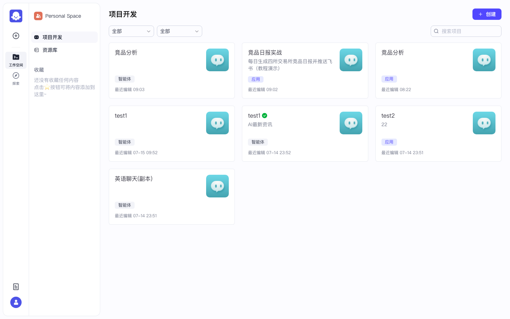
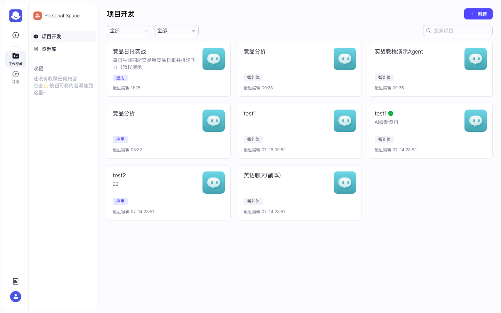
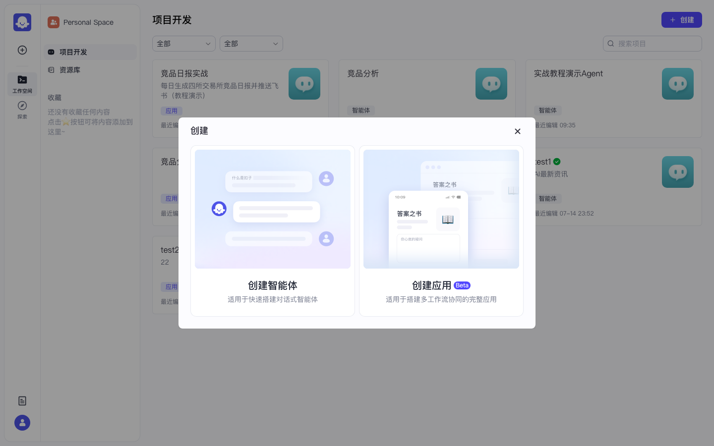
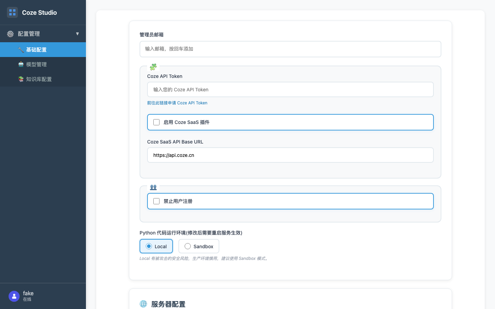
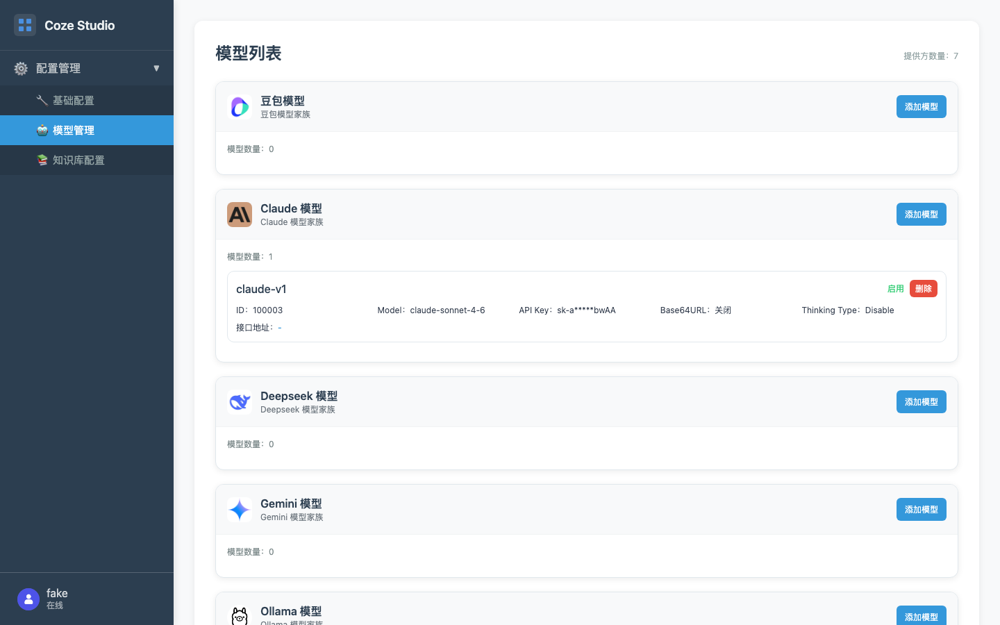
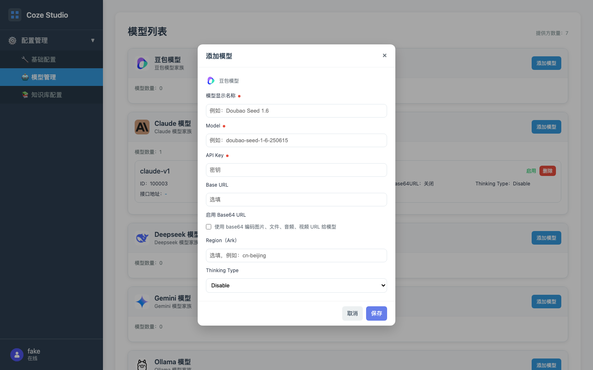

Coze 实战 · 第1课 / 共 10 课 · ≈30 min · 开源可用
P00 · 环境启动 · 登录 · 模型配置
本课是后续所有实战的硬前置：服务起来、能登录、至少一个模型为「启用」。上级：实战总目录。
0
前置条件
| 项 | 要求 |
|---|---|
| 机器 | 建议 ≥ 2 核 / 4GB 内存；已装 Docker Desktop |
| 代码 | 已 clone 开源仓库 coze-studio |
| 模型 Key | 至少一家云厂商 API Key（Claude / OpenAI / 豆包等任选） |
| 浏览器 | Chrome / Edge 最新版 |
本课不配好模型，后面智能体调试与工作流 LLM 节点都会失败（Tokens=0 或报错）。
1
启动本地服务（逐步）
作用：拉起前端 + Go 后端 + MySQL/Redis/ES/MinIO 等中间件，浏览器入口固定在
http://localhost:8888。1.1 打开 Docker Desktop
- Mac：启动 Docker Desktop，等到菜单栏鲸鱼图标显示 Running
- 设置里把资源调到建议：≥ 2 CPU、≥ 4GB Memory（越小越容易中途挂掉）
1.2 进入仓库目录
# 把路径换成你本机 clone 的位置
cd ~/work/codes/company/AI_WORK/coze-studio
# 确认能看到 Makefile
ls Makefile1.3（可选）检查 docker/.env
- 若没有
docker/.env：cp docker/.env.example docker/.env - 新手可先不改，直接下一步
1.4 一键启动
make web
# 终端会拉镜像 / 起容器，第一次较慢（几分钟到十几分钟都正常）
# 看到服务就绪后，用浏览器打开：
open http://localhost:8888✅ 验收：浏览器打开
http://localhost:8888 能看到登录/注册页，而不是「无法访问此网站 / Connection refused」。常见卡点
端口占用：8888 被占 → 关掉占用进程，或查 docker compose 端口映射。
内存不足：Docker Desktop 调到 ≥4GB 后执行
拉镜像失败：检查网络/代理，重试
内存不足：Docker Desktop 调到 ≥4GB 后执行
make clean && make web。拉镜像失败：检查网络/代理，重试
make web。
2
注册并登录
作用：开源版用邮箱自建账号；登录后进入 Personal Space。
- 浏览器地址栏输入 http://localhost:8888 回车（若跳到登录页也可）
- 若看到登录页：在邮箱框输入你的邮箱（示例账号仅本地演示用，请用你自己注册的）
- 在密码框输入密码
- 第一次使用：先点「注册」创建账号，再登录；已有账号直接点「登录」
- 成功后浏览器地址应变为类似 /space/数字很长/develop，页面标题附近出现「项目开发」
- 左侧应能看到：「项目开发」「资源库」；右上角有「创建」按钮
若页面一直转圈：确认 Docker /
make web 仍在跑；刷新前先看终端有无报错。图：登录页。邮箱框 + 密码框 +「登录 / 注册」

图：登录成功后的「项目开发」页。左侧是工作空间导航，右侧是智能体/应用卡片。

图：实录项目开发页（可见「竞品日报实战」应用、「竞品分析」智能体等卡片）。

图：点右上角「创建」后的弹窗 — 左侧「创建智能体」、右侧「创建应用」。第2课选智能体，第5课选应用。
✅ 验收：能看到「+ 创建」按钮，以及「项目开发 / 资源库」侧栏。
3
配置并启用模型（必做）
作用：管理后台登记云厂商模型；智能体/工作流下拉才能选到它。
- 浏览器打开 http://localhost:8888/admin/#model-management
- 左侧确认在「配置管理 → 模型管理」
- 在列表里找到你要用的厂商卡片（Claude / 豆包 / OpenAI / Deepseek …）
- 点该卡片右侧 添加模型
- 按下表填写 → 保存
- 列表行里确认状态为绿色 启用（若是禁用，点启用）

图：打开 /admin 后的管理后台首页。

图：模型管理列表（点左侧「模型管理」进入）。
图：模型列表。实录已有 claude-v1（ID 100003，模型 claude-sonnet-4-6，状态启用）。

图：点「添加模型」后的表单（各厂商字段类似；示例为豆包表单，Claude/OpenAI 同理）。
可复制字段说明（以 Claude 为例）
| 表单字段 | 填什么 | 示例 |
|---|---|---|
| 模型显示名称 * | 你在 UI 里看到的名字 | claude-v1 |
| Model * | 厂商真实模型 ID | claude-sonnet-4-6（按你账号可用型号改） |
| API Key * | 厂商控制台复制的密钥 | sk-... |
| Base URL | 可选；走代理/兼容网关时填 | 留空或厂商文档地址 |
| Thinking Type | 新手保持 Disable | Disable |
密钥不要提交到 git。教程截图里 Key 会打码；你本机保存后列表行只显示部分字符属正常。
常见卡点
保存成功但智能体下拉没有：确认该行是「启用」而不是禁用。
调用 401：API Key 错或 Base URL 与厂商不匹配。
管理后台进不去：确认服务已起，地址是
调用 401：API Key 错或 Base URL 与厂商不匹配。
管理后台进不去：确认服务已起，地址是
/admin/#model-management（带 hash）。
4
本课验收清单
- □
http://localhost:8888可打开 - □ 已用邮箱登录，进入「项目开发」
- □ 模型管理里至少 1 条记录状态为「启用」
- □ 新建智能体时，模型下拉能看到该显示名称（如
claude-v1）
全部勾完 → 下一课（学习路径第2课）P02 智能体编排。先练对话，工作流放在第6课。